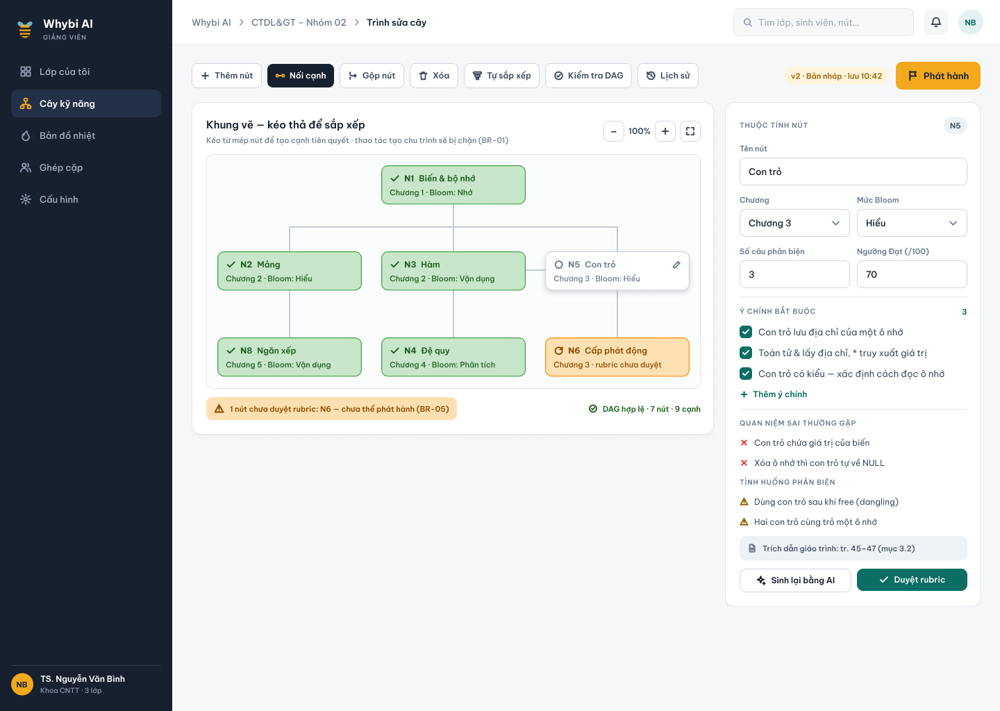
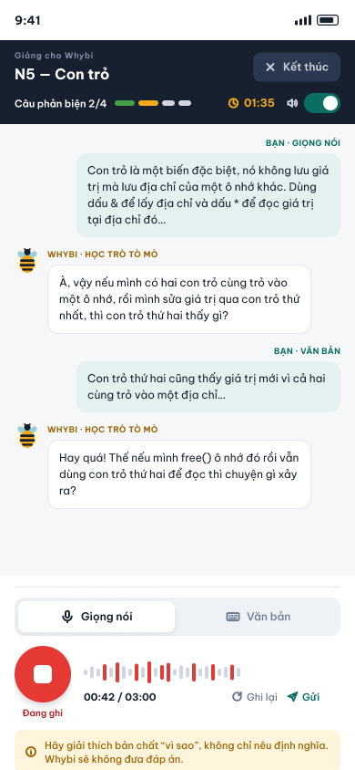
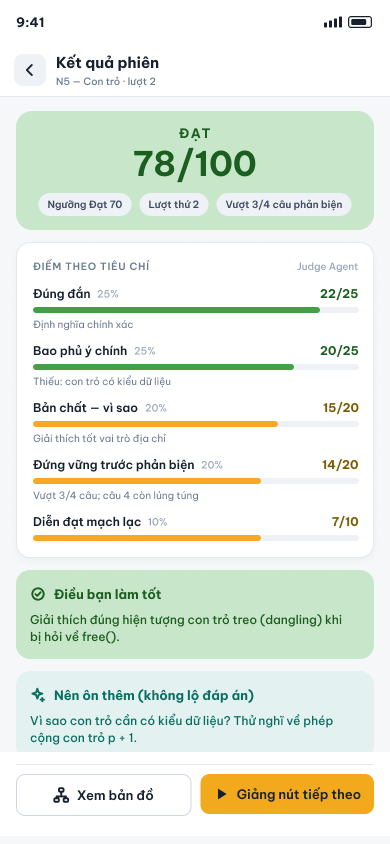
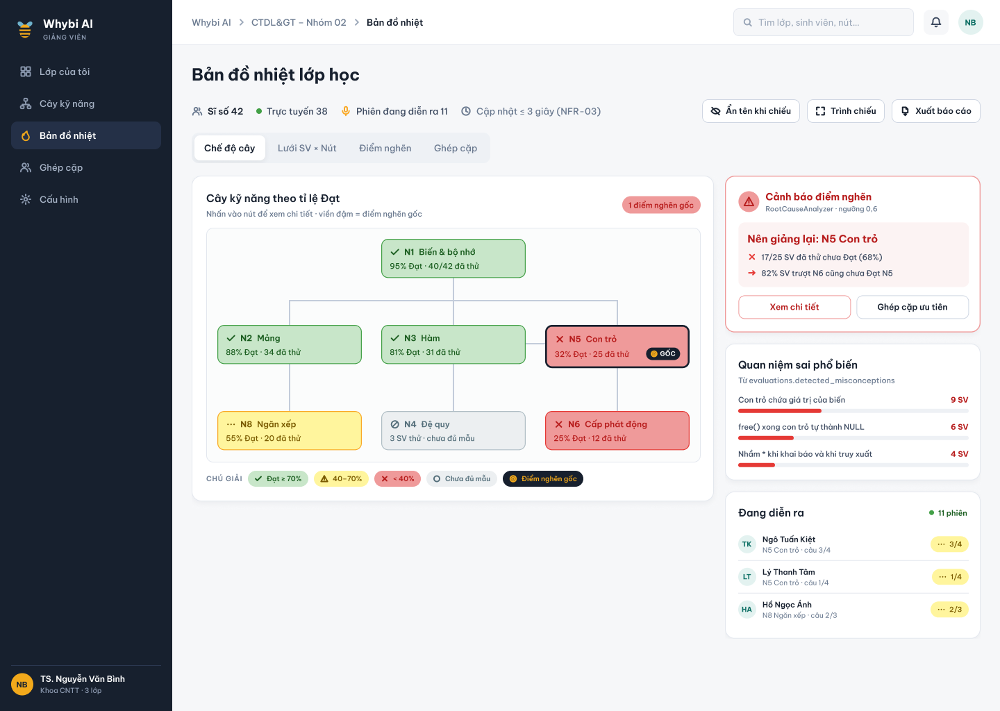
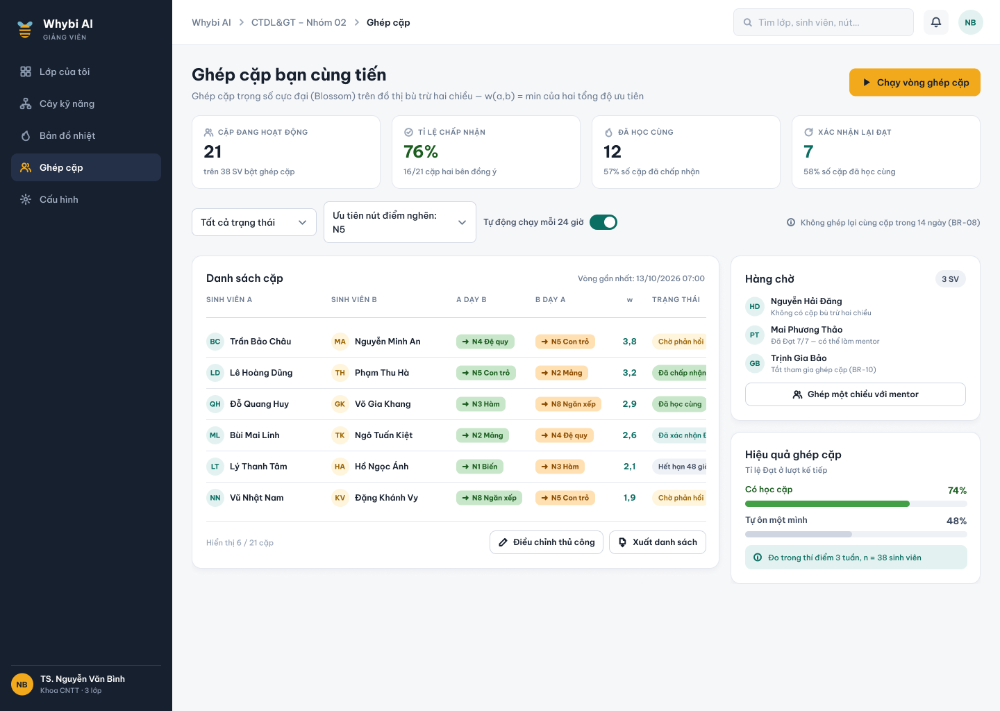

Nền tảng học tập “Sinh viên làm thầy, AI làm học trò”
Vận dụng kỹ thuật Feynman & cơ chế tương tác AI Agent đa tầng
“Nếu bạn không thể giải thích điều gì đó cho một đứa trẻ hoặc người mới bắt đầu hiểu được một cách đơn giản, thì bạn chưa thực sự hiểu bản chất của nó.”
Trích xuất tự động từ giáo trình môn học; bảo toàn tính thứ tự tiên quyết qua cấu trúc đồ thị có hướng không chu trình (DAG).
Sinh viên giảng bằng giọng nói/văn bản; AI Tutee hỏi vặn thực tế; AI Judge độc lập chấm 5 tiêu chí theo chuẩn BR-03.
Cập nhật thời gian thực qua WebSocket; thuật toán phân tích đồ thị tự động chẩn đoán điểm tắc nghẽn gốc rễ (Root-cause).
Thuật toán bipartite matching ghép đôi bạn cùng tiến bổ khuyết; hoàn tất phiên giảng lại để chính thức xác nhận năng lực.
SV gửi lời giảng luôn là DỮ LIỆU (bọc trong <student_transcript>), không bao giờ là CHỈ THỊ hệ thống. Ngăn chặn tuyệt đối Prompt Injection.
Kết quả thực nghiệm: F1-Score trích xuất cạnh quan hệ đạt 0.74 (vượt xa mục tiêu đề ra ≥ 0.70) trên môn Cấu trúc dữ liệu & Giải thuật.

Tutee chuẩn mực: Tỷ lệ để lộ đáp án chỉ 1.7% (chuẩn quy định ≤ 5.0%), 0% vi phạm luật vai học trò trên 120 câu hỏi thử nghiệm.

Phản hồi sư phạm tức thì: Chỉ rõ Điều làm tốt, Gợi ý ôn tập và trích dẫn số trang chính xác trong giáo trình môn học.

Hiệu quả giảng dạy: Giúp giảng viên điều chỉnh bài giảng trên lớp tập trung đúng vào điểm nghẽn của đại đa số sinh viên.

Khép kín vòng tròn học tập: Từ phát hiện lỗ hổng ở MX3 đến xử lý triệt để qua hỗ trợ đồng đẳng ở MX4.

| Hạng mục kiểm thử | Tiêu chí đánh giá | Chỉ tiêu đề cương | Kết quả thực tế | Đánh giá |
|---|---|---|---|---|
| Cây kỹ năng (MX1) | F1-Score trích xuất cạnh quan hệ DAG | F1 ≥ 0.70 | 0.74 | ĐẠT CHỈ TIÊU |
| Judge Agent (MX2) | Độ đồng thuận với chuyên gia (Cohen's κ) | κ ≥ 0.60 | 0.643 (62 mẫu nhãn) | ĐẠT CHỈ TIÊU |
| Guard Agent (MX2) | Tỷ lệ phát hiện & chặn gian lận / tấn công | Chặn ≥ 90.0% | 97.5% (39/40 ca) | VƯỢT CHỈ TIÊU |
| Guard Agent (MX2) | Tỷ lệ lọt gian lận (False Pass Rate) | = 0.0% | 0.0% (0/40 ca) | TUYỆT ĐỐI AN TOÀN |
| Tutee Agent (MX2) | Tỷ lệ vi phạm làm lộ đáp án cho SV | ≤ 5.0% | 1.7% (2/120 câu) | RẤT XUẤT SẮC |
| Tutee Agent (MX2) | Vi phạm vai học trò (Role Violation) | = 0.0% | 0.0% (0/120 câu) | CHUẨN VAI 100% |
| STT Nhận dạng giọng nói | Word Error Rate (WER) tiếng Việt | WER ≤ 15.0% | 11.8% | ĐẠT CHỈ TIÊU |
| STT Thuật ngữ CNTT | Độ chính xác thuật ngữ chuyên ngành | ≥ 90.0% | 92.4% | ĐẠT CHỈ TIÊU |
| Tải đồng thời (20 phiên) | Độ trễ p95 phản hồi toàn phiên | p95 ≤ 3,000 ms | 1,070 ms (0% lỗi) | MƯỢT MÀ |
| Tải đồng thời (50 phiên) | Độ trễ p95 phản hồi toàn phiên | p95 ≤ 5,000 ms | 3,751 ms (0% lỗi) | ĐẠT CHỈ TIÊU |
Nếu sinh viên vô tình tải lại trang (F5) hoặc rớt mạng khi đang trả lời:
deadline.Nếu dịch vụ nhận dạng giọng nói gặp sự cố mạng (503):
free(); nhận kết quả 5 tiêu chí; gõ xin điểm để Guard bắt cờ.
“Khi một sinh viên giảng lại được bài học cho AI hiểu,
đó là lúc tri thức thực sự thuộc về các em.”
Đội WhyBloom rất sẵn sàng giải trình và trình diễn chi tiết mọi tính năng